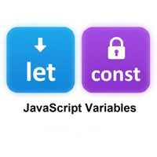

JavaScriptにおける let と const の違い

- プロンプト例
JavaScriptでletとconstの違いは？
結論（一番大きな違い）
| 項目 | let | const |
|---|---|---|
| 再代入 | できる | できない |
| 再宣言 | できない | できない |
| スコープ | ブロックスコープ | ブロックスコープ |
| 使いどころ | 値が変わる変数 | 値が変わらない定数 |
基本の違い：再代入できるか
let（再代入できる）
let count = 1; count = 2; // OK
const（再代入できない）
const count = 1; count = 2; // ❌ エラー
const でも「中身」は変えられる場合がある
- const は 変数の参照を固定 するだけなので、オブジェクトや配列の中身は変更できます
c配列
const arr = [1, 2, 3]; arr.push(4); // OK
オブジェクト
const user = { name: "Taro" }; user.name = "Hanako"; // OK
ただし、再代入は不可
const arr = [1,2]; arr = [3,4]; // ❌ エラー
スコープの違い（let / const 共通）
- どちらも ブロックスコープ です
let x = 10; const y = 20; } console.log(x); // ❌ エラー console.log(y); // ❌ エラー
使い分けのベストプラクティス（実務で重要）
👉 基本は const を使う
👉 値が変わる場合のみ let を使う
const TAX = 0.1; // 変わらない → const let total = 100; // 途中で変わる → let total += total * TAX;
なぜ const を優先？
- バグを防げる
- コードの意図が明確になる
- 可読性が上がる
参考：var との違い（知っておくと◎）
| var | let / const | |
|---|---|---|
| スコープ | 関数 | ブロック |
| 巻き上げ | あり（危険） | あり（安全） |
| 再宣言 | 可能 | 不可 |